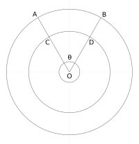

Find below a selected set of essays on some of my thoughts of a deeper kind.
The more I dig, the deeper I go, the more I realize, how little I know
Find below a selected set of essays on some of my thoughts of a deeper kind.
The old adage;
Never Argue with Morons,
They’ll drag you down to their level,
and then beat you with experience.
It even applies to generally negative people, extremists and well, people at a lower level of intelligence than you.
It also applies to activities other than arguments, especially, fighting of most types.
Why?
As stated above, you are going to get beaten if you fight at their level, and if you don’t you’re going to be labeled a bully, so to avoid the labeling you move down to their level and naturally get beaten.
What you do after you get beaten is, like any self respecting smart person start learning their ways and launch an attack again.
Well, since they already have a lot more experience than you, you get beaten again.
With that defeat, you learn some more and you attack again, but you get beaten again.
This learning and attacking cycle continues till the day you finally defeat them.
But, that victory against them somehow has become irrelevant, because you've already become them.
The best course of action against such an adversary is to swoop down on them rapidly and eliminate them quickly, yes, you get labeled a bully, but atleast you have the satisfaction of having defeated them on your own terms.
Time is quite a curious entity.
There’s either too little of it or too much of it.
Following is an extract from my rumination on the nature of ‘time’.
Basically, time has a constant decay rate.
So, if time passes at a constant pace, how come some people have too less time in a day and for some a day seems never to end?

Refer the diagram on the right.
The angle between line ‘OA’ and line ‘OB’ is the same anywhere within the sector.
Lets consider ‘that’ angle θ to be ‘Time’
Line ‘OA’ would represent an event in the present and line ‘OB’ would represent an event in the future.
If a human is engaged in an activity starting at ‘OA’ the real time would be the same to complete it at ‘OB’.
But, sometimes, humans, when engaged in certain activities find time passing too slowly or too quickly.
The reason for this phenomenon can be explained if we realize that passage of time for humans is based on their perception of it.
Even though θ is constant anywhere within the sector ‘OAB’, the length of arcs ‘AB’ and ‘CD’ is different.
Those arcs, i.e. ‘AB’ and ‘CD’ are the perception of time among humans.
So what are the points ‘A’ and ‘C’ on line ‘OA’?
The points ‘A’ and ‘C’ represent the level of concentration or focus exerted by the human at that particular moment.
The more focused the human is, the shorter is the distance from ‘O’ and consequently shorter is the perception of passage of time.
What is the reason for the difference in lengths of ‘OC’ and ‘OA’?
Thoughts.
Too many thoughts would increase the length and hence the perception of passage of time.
What is ‘O’?
‘O’ would be the place within human conciousness where no thoughts exist, it is the Zen state of “No Mind”.
It is the point where humans become at one with themselves, and that is when they can perform the most impossible tasks almost effortlessly.
I've consistently heard the phrase “The Universe is Infinite”.
Is it really so?
Let’s take an example, suppose there’s a bookstore covering an area of 5,000 square feet.
There are rows of books on almost every topic known to man.
All those rows are well categorised and tagged.
Let’s introduce a child of 4 years old into the book store, one who doesn’t yet know how to read, and ask him to find a colouring activity book.
The child would be overwhealmed by the sheer enormity of the book store.
The child would get the perception that the book store is infinite.
Now, let’s introduce a well educated adult into the book store and ask him to find a book on the history of naval warfare.
That person would not feel overwhealmed by the size of the book store, he might not be in a position to locate the book, but he would know how to atleast navigate himself to a location where the book would probably be found.
But, take the case of the book store manager, he with his detailed knowledge of the book store as well as access to his cataloging tools would be able to find any book in very little time and with minimal effort.
What is infinite to a child is within reach for a regular adult, but certainly under control for the store manager.
Infinity is relative.
I follow a dual dietary regime, I’m in the rare position of being capable of surviving solely on vegetarian food for extended periods of time, but also have the capacity to effortlessly digest non-vegetarian cuisine.
I've heard a lot about how vegetarianism leads to peaceful thoughts and a sense of emotional well being.
Is that really so?
A little digging would reveal a fact unknown to most people, Adolf Hitler was a vegetarian.
There has been a wave of fuzziness sweeping the world, especially intensely for the past decade.
People have given up being rational.
People have started going entirely with their feelings without pausing to understand what is it that they are feeling and why.
People have started believing in fuzzy thinking, they claim that the world isn’t clear, they claim that the picture is very fuzzy and hence requires fuzzy thinking to cope and adapt to it.
What people don’t realise is that they aren’t able to see the picture clearly because they are staring at it too closely, they are too deeply involved in life.
What needs to be done is to step back, away from the picture a bit, and suddenly that which has been fuzzy before would be clear and distinct.
To the unknowledgeable ones, sunlight is white, but to the ones who are in the know, its common knowledge that sunlight is actually composed of seven distinct colours.
It's the introduction of a tool called the prism which reveals that secret.
For humans, that tool is courage, it requires courage to see the truth and a phenomenal amount of inner strength to understand and accept it.
This is the Aquarian age, an age which is supposed to dispel all myths, eliminate misconceptions and bring clarity where fuzziness once reigned.
Humanity needs to get out of its comfort zone to come out of the darkness of ignorance, struggle hard to be rational, struggle hard to achieve clarity, absolute clarity, because a clear mind is the only one which can see the beginning of the path back to the universal source.
There has been an explosion of the peace movement in recent years.
It started with the teachings of Buddha and re-surfaced around 1915 when Mr. Mohandas Gandhi initiated the non-violent struggle in India against excessive land-tax and discrimination by the British.
The movement caught momentum during the Indian freedom struggle and got world wide attention when India supposedly achieved its freedom through those non-violent means.
Later, various groups across the world adopted that philosophy, they led peace marches, wrote poetry, music, articles and books about it.
But frankly, is peace a reality?
Can violence be totally eliminated? uprooted? thrown out completely?
To answer these questions, we must first understand what exactly is violence.
Violence is the result of a minimum of two forces trying to overcome and overpower one another.
Look around you, the Sun is constantly going through a process of violent combustion, waves are constantly crashing onto sea shores, living beings are consuming nutrients from sources which are more passive than them and assimilating them (which is again quite violent), western science has finally acknowledged what Vedic literature has known for thousands of years, that the universe began through a process called the Big Bang.
There's a war going on constantly, on some level or another, its because the very nature of nature is violent.
And why is that?
It's because nature likes to achieve a state of balance.
It's because;
The ultimate objective of all war is peace.
- Sun Tzu, The Art of War
Peace!
Peace is good, it leads to higher level emotions like love, but reflect on love a bit more and you'll realise that the ultimate physical expression of love, the act of making love, if done properly, always ends violently.
Have you ever heard any man or woman say, “I had a peaceful orgasm”.
Instead of struggling hard to eradicate violence, humanity should learn to accept it as a fundamental state of existence.
What humanity should focus more on, is to manage violence.
Nuclear fission is violent.
Unmanaged nuclear fission gives us the atom bomb.
But, managed nuclear fission gives us power to run our lives smoothly.
New age spiritualists propogate the usage of thought level commands to attract what ever an individual wishes.
They claim that its very similar to going through a catalogue and choosing items you wish to have and then focusing on them hard enough till they manifest for you.
They also claim that there’s no need to worry about the stock running out as the universe has abundance.
And finally they claim that no two people could possibly wish to have the exact same thing.
The problem out here is that, these new age spiritualists either aren’t aware of the fact or refuse to accept the fact that the universe is a closed system.
As has been mentioned before, the universe is not infinite, and hence it has its limits, and anything which has limits tends to keep its energy in a state of equilibrium.
When-ever a person engages in these thought level commands to attract something to him, he should remember that he is depleting the energy resource of the universe, and the universe will naturally take something back from the person to maintain its equilibrium.
Simply put, remember the adage;
To get something, you've to give something.
Finally, humans should understand that on the scale of things as grand as this universe, humanity is an insignificant manifestation of matter, energy and thought, learn to be good the universe you are living in.
Rather than making a command to the universe, make a request, it will work better, but do remember, you are going to lose something in return, sometimes something you wouldn't be willing to part with.
There's wisdom in the words, “better to migrate rather than adapt”.
Look at the Eskimos and Australian Aborigines, they all opted to adapt and got left behind the rest of the world which had chosen to “migrate”.